甲戌日
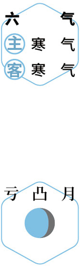
 食粥
食粥初冬｜节气｜ 小雪 ｜时间｜ 十一月廿二日至十二月七日
今年小雪需特别注意的健康问题：咳嗽、小便异常、消化道出血
原料：栗子、核桃、川陈皮、莲子、枸杞子、茯苓、粥米、植物油。
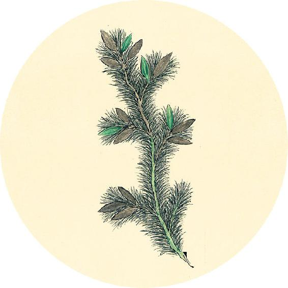
节气食方（一）
今年的补肾养藏汤配方并入莲杞顺时粥。
辛丑岁全年保健粥：莲杞顺时粥（小雪到小寒期间的配方）
原料（1人份）：栗子6个、核桃6个、川陈皮1/2个、莲子12颗、枸杞子1把、茯苓10克、粥米60克、植物油少许。（做法见11月23日）
春刺冬分，邪气著藏，令人胀，病不愈，又且欲言语。
——黄帝内经·素问·诊要经终论
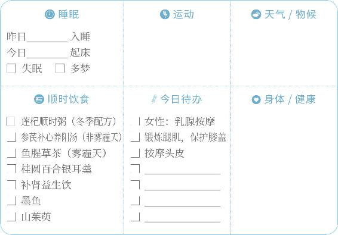

食粥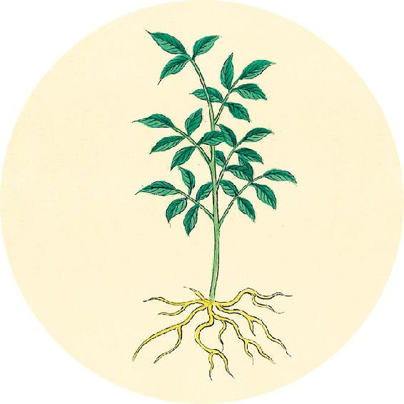
节气食方（一）
莲杞顺时粥（小雪到小寒期间的配方）
做法：
1. 栗子和核桃都剥去外壳，留下内皮。
2. 全部原料一起加水浸泡后，放少许油，煮成粥。
3. 将栗子内皮捞出来不要，放入枸杞。
枸杞可以多放一些，调和栗子和核桃的苦味。
这个配方加入了补肾养藏汤，增强了健脾补肾的作用，可以滋阴、温阳、补精气。
【释义】春天误刺了冬天的部位，邪气就会深居于内脏，使人腹胀，病就不能痊愈，且使人欲多说话。
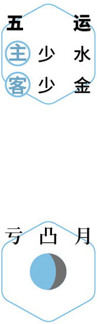
养藏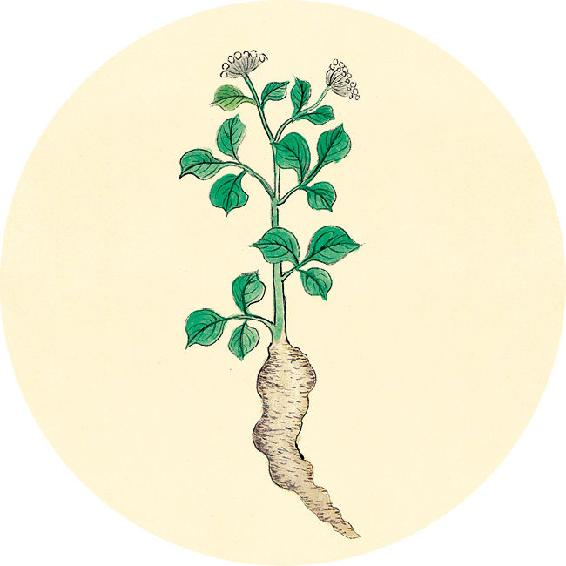
节气食方（二）
银耳桂圆羹
原料：银耳1小朵、桂圆肉（或桂圆去壳）30粒左右，怕上火者加百合1小把。
功效：银耳与桂圆肉一起冷水下锅炖煮3小时以上，直到银耳软糯，汤色变深，桂圆的甜香完全融入银耳羹中。
功效：滋阴补血，养心安神，改善气色。
夏刺春分，病不愈，令人解（xiè）堕（同“懈惰”）。
——黄帝内经·素问·诊要经终论
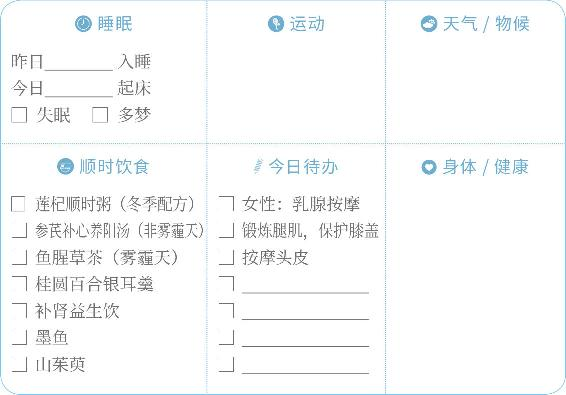
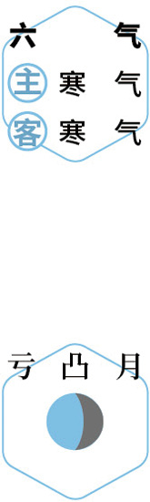
食橘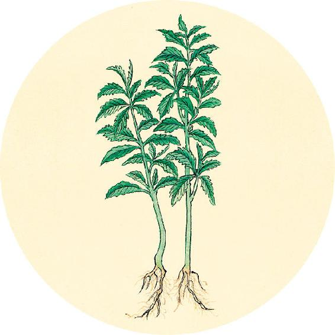
二十四节气茶养生
今年小雪节气品茶推荐：桑椹茶。
补肾益生饮
原料：葡萄干15克、黑桑椹干15克，血虚者加红枣3个。
做法：沸水闷泡或煮水，代茶饮用。
功效：益肾，养血，抗衰老。也可用于孕期保健。
【释义】夏天误刺了春天的部位，病不能愈，使人倦怠无力。
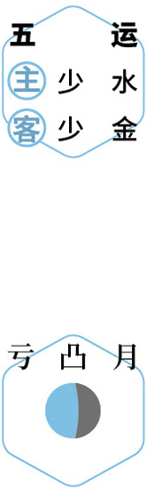
感恩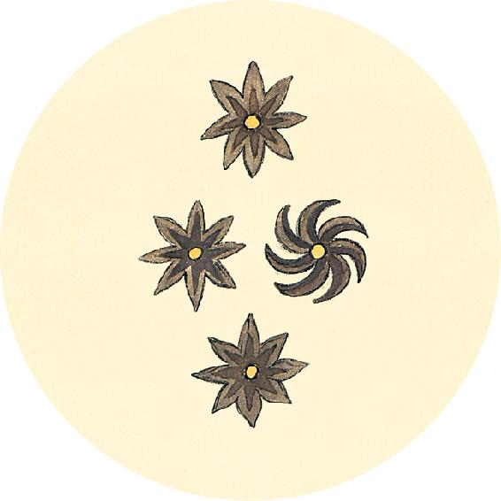
一候反思
是否有这些情况：
眼睛干涩 □ 是 □ 否
指甲软、容易断 □ 是 □ 否
月经量少 □ 是 □ 否
睡眠浅，半夜易醒 □ 是 □ 否
头顶的白发多 □ 是 □ 否
经常熬夜 □ 是 □ 否
任何一个答“是”，可每日食用墨鱼1～2只直到立春，平时可常吃桑果百合四物膏（做法见5月13日）。
夏刺秋分，病不愈，令人心中欲无言，惕惕如人将捕之。
——黄帝内经·素问·诊要经终论
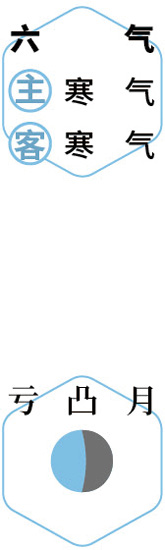
补血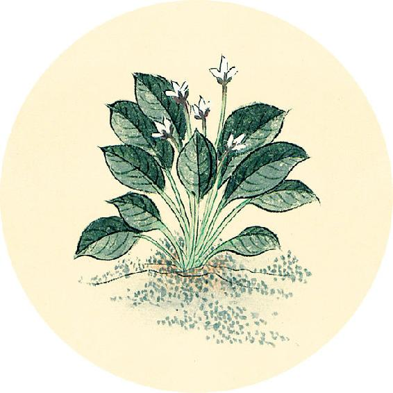
健康提示
小雪节气的养生功课：固肾、闭藏。
今年小雪特殊的养生要点——
注意给腰部和腹部保暖，补阳气，这个冬天会好过一些。怀孕的女性，从现在开始直到大寒这段时间要特别注意保养。
保养重点：小肠、膀胱。
容易出现的问题：咳嗽、小便异常、消化道出血。
【释义】夏天误刺了秋天的部位，病不能愈，使人从心里不愿说话，惴惴不安，好像有人要来抓捕自己似的。
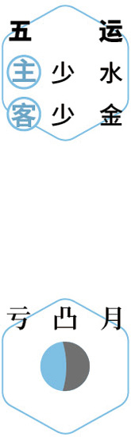
养阳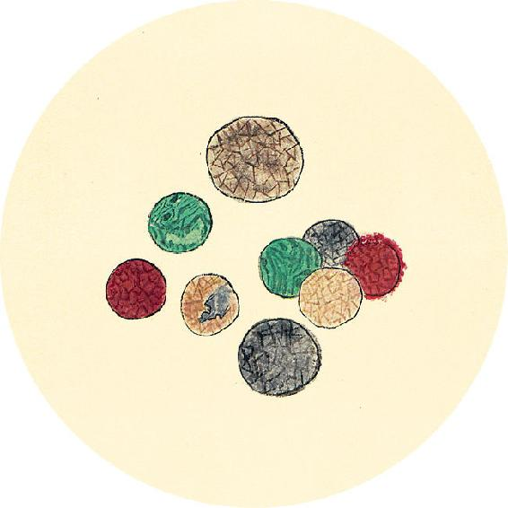
健康提示
怎样预防耳鸣？
如果出现耳鸣，要马上调理。时间长了，听力损失就很难逆转。
百莲聪耳汤
原料：百合、枸杞、莲子各1把。
做法：百合、莲子加水煮到软烂，起锅后，放入枸杞，一起食用。
夏刺冬分，病不愈，令人少气（“少”疑应作“上”），时欲怒。
——黄帝内经·素问·诊要经终论
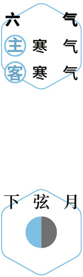
护耳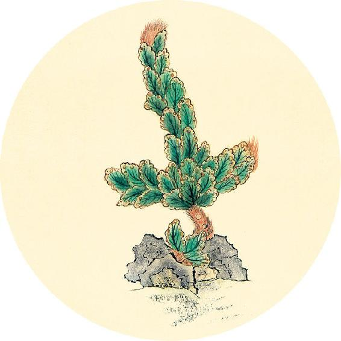
健康提示
从小雪节气开始，进入辛丑岁的第六气（六气，也称终气）阶段，到大寒之前结束。
历时59天（11月22日18:00—1月20日14:00）
主气——寒气；客运——寒气。
今年这个阶段是一年中人体最易生内伤病之时，骨骼和关节也容易出现问题。寒湿体质的人尤其要注意。这两个月孕妇也要小心养胎。
保健食方：参芪补心养阳汤（见11月30日）、鱼腥草茶（雾霾天）。
【释义】夏天误刺了冬天的部位，病不能愈，使人气上逆，常易发怒。
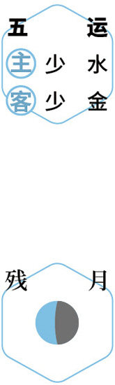
避寒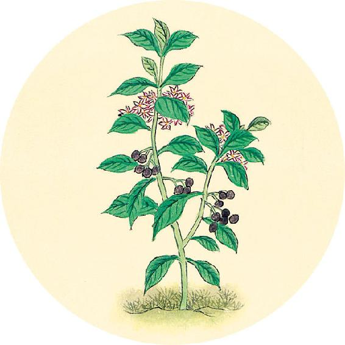
健康提示
辛丑岁六气保健方：参芪补心养阳汤（小雪、大雪、冬至、小寒）
原料：党参15克、黄芪15克、甘草6克、当归6克、陈皮1/2个、带皮生姜3片、大枣6个。
做法一：水煮40分钟后饮用。
做法二：与羊肉一起煮汤食用（见12月21日）。
注意：
1. 感冒发热时，暂时停喝。
2. 对照12月1日自测选择个人配方。
秋刺春分，病不已，令人惕然，欲有所为，起而忘之。
——黄帝内经·素问·诊要经终论
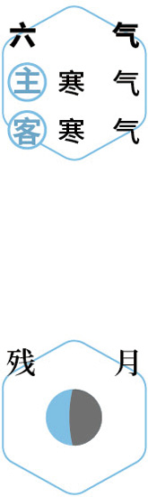
补心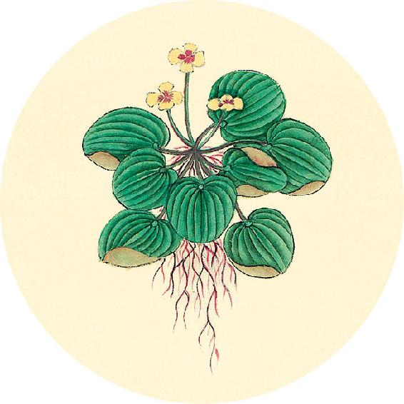
二候反思
对照个人身体情况选择参芪补心养阳汤的配方调整：
□ 根据6月30日自测结果，若1答“是”，加山茱萸12克。
□ 根据8月11日自测结果，夏季体重变化不大，但腰围变大的人，黄芪用30克。
□ 寒湿重的人加花椒7粒。
□ 女性经期加红糖适量。
【释义】秋天误刺了春天的部位，病不能愈，使人惕然不宁，想要做一件事，而立刻忘了。
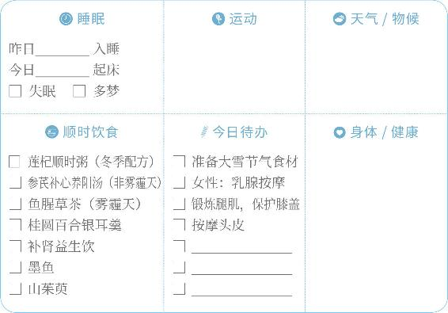
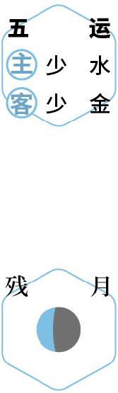
查病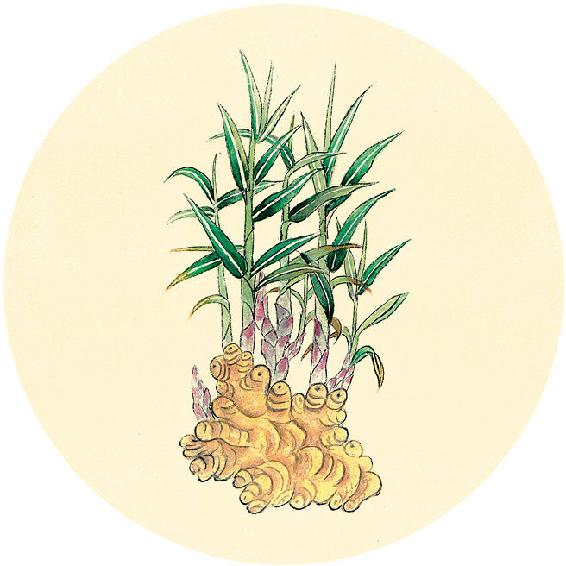
健康提示
预防膝关节炎的四字经（上）
1. 慢下楼梯
下楼梯太快，对膝盖伤害很大。下楼梯时，膝关节要承受相当于人体自身体重4倍的冲击力。速度越快，冲击力就越大。
2. 常戴护膝
常戴护膝有两个好处：
第一，运动时对膝盖起到支撑和保护作用。
第二，防风寒。天凉时戴护膝让膝盖保暖很重要。
高龄老人，建议一年四季可以戴护膝。经常开车的人，在膝盖上搭一个披肩或薄毯，也可以起到给膝盖挡风的作用。
秋刺夏分，病不已，令人益嗜卧，且又善梦。
——黄帝内经·素问·诊要经终论
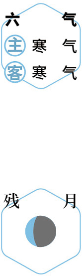
剥橘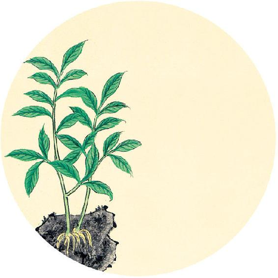
健康提示
预防膝关节炎的四字经（下）
3. 锻炼腿肌
腿部肌肉有力量，能很好地减轻膝盖的压力。特别是要锻炼膝盖周围的肌肉。
睡前平躺在床上，反复用力收紧膝盖周围的肌肉，连续做二十次，可以让膝盖部位的肌肉锻炼得比较结实、有强度，能更好地保护膝关节。
4. 足浴暖膝
每天泡脚祛除寒湿，对关节炎很有帮助。
做法：将艾叶、花椒、小黄姜打粉，用纱布包起来，用开水冲泡后，放入深木桶泡脚，最好泡到小腿部位，用泡水的足浴包擦洗膝关节。
【释义】秋天误刺了夏天的部位，病不能愈，使人越来越贪睡，并且多梦。
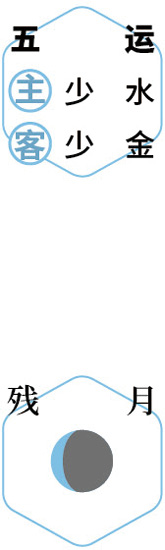
早睡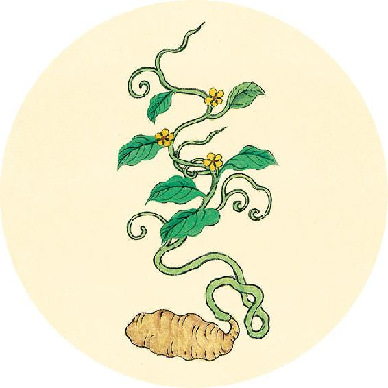
健康提示
调理口腔溃疡反复发作的方法
很多人以为口腔溃疡是“上火”了，结果越是用清火的药，口腔溃疡越是反复发作。其实口腔溃疡与舌尖长疮不一样。舌尖长疮是火毒引起的，而口腔溃疡是湿毒引起的。
调理口腔溃疡：用“上病下治”法，将吴茱萸打粉每晚敷在脚心涌泉穴，坚持一周（具体方法见4月9日）。
秋刺冬分，病不已，令人洒洒时寒。
——黄帝内经·素问·诊要经终论
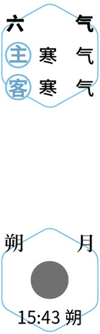
足浴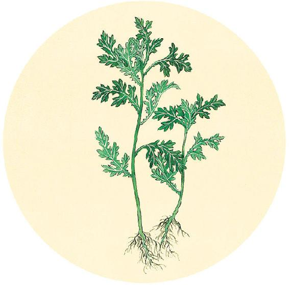
食材准备
后天进入大雪节气。
1. 莲杞顺时粥（小雪到小寒期间的配方）
原料：栗子、核桃、枸杞子、陈皮、莲子、茯苓、粥料。
2. 银耳羹
原料：银耳、桂圆、百合、枸杞等。
3. 冬季补品
原料：墨鱼、山茱萸。
4. 预防气管炎茶
原料：大枣、甘草、葱白连须、鱼腥茶嫩尖茶。
5. 参芪补心养阳汤（从小雪吃到明年大寒前日，做法见12月21日）
原料：党参、黄芪、甘草、当归、陈皮、生姜、大枣、甘蔗或牛蒡、羊肉、胡椒粉。
【释义】秋天误刺了冬天的部位，病不能愈，使人时常发冷。
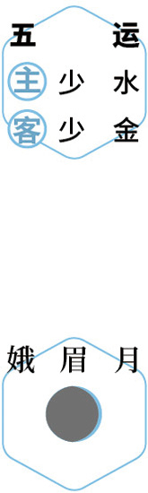
居家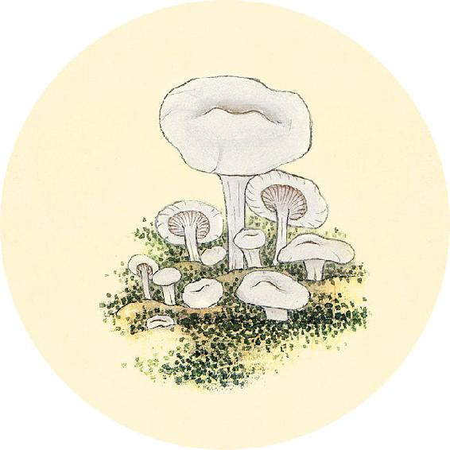
节气总结备
银耳羹________次
莲杞顺时粥________次
参芪补心养阳汤________次
墨鱼________次
山茱萸________次
身体哪些方面有改善_________________________
冬刺春分，病不已，令人欲卧不能眠，眠而有见。
——黄帝内经·素问·诊要经终论
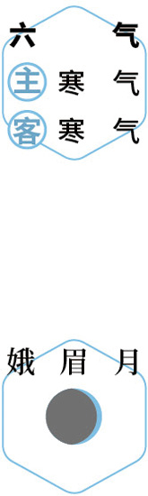
静心